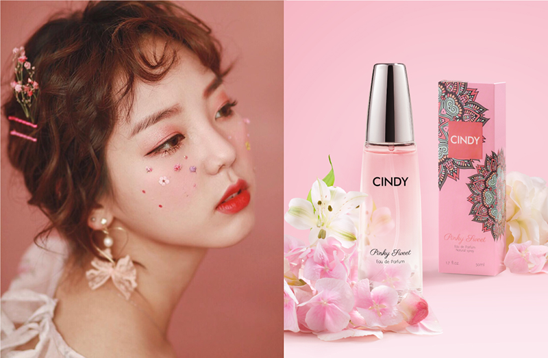

12/10/2019
Tìm kiếm nước hoa phù hợp dựa vào cung hoàng đạo
Cung hoàng đạo có ảnh hưởng rất lớn đến tính cách và sở thích của một người. Do đó, hãy để Cindy giúp bạn tìm ra hương nước hoa phù hợp nhất với bạn!
BẢO BÌNH (20/01 – 18/02)
Dễ dàng thích nghi và luôn thuận theo lý trí, Bảo Bình là những người luôn đứng lên vì lẽ phải. Thuộc nguyên tố Khí, họ ghét bị hạn chế hoặc kìm kẹp, và đôi lúc, họ trở nên hơi quá nhạy cảm. Hương thơm của xạ hương trắng và gỗ đàn hương sẽ vô cùng phù hợp với tính cách cởi mở của họ.
SONG NGƯ (19/02 – 20/03)
Song Ngư chẳng cần gì hơn một lối sống gắn liền với sự hoàn mỹ. Họ thể hiện cảm xúc một cách tự do, và đôi khi bị cho là quá ngây thơ. Sản phẩm chứa hương hoa, hương gỗ cùng nốt hương hoa cam độc đáo, chắc chắn sẽ khiến Song Ngư không thể ngừng yêu!
BẠCH DƯƠNG (21/03 – 19/04)
Bạch Dương với ý chí mạnh mẽ là những cá nhân có chủ kiến và tính sáng tạo cao. Được biết đến bởi tính khí có chút “nóng nảy” và niềm đam mê mãnh liệt, cung Bạch Dương đặc biệt phù hợp với những hương nước hoa nồng nàn, cá tính có tầng hương chính hòa quyện chút hương hoa. Hoa nhài đỏ là loại hoa có mùi hương độc đáo và kiêu hãnh như chính con người Bạch Dương.
KIM NGƯU (20/04 – 20/05)
Là chòm sao cứng đầu nhất nhưng cũng trung thành nhất trong 12 cung hoàng đạo. Kim Ngưu nổi tiếng bởi sự kiên nhẫn và tính hào phóng. Điều này khiến họ trở thành người bạn đáng tin cậy của bất kì ai. Hương nước hoa chứa nốt hương hổ phách ấm nồng sẽ nhẹ nhàng gợi nhớ đến nguyên tố biểu tượng cho Kim Ngưu – nguyên tố Đất.
SONG TỬ (21/05 – 20/06)
Có một tính từ thường được dùng để miêu tả Song Tử, đó chính là “hơi bốc đồng”. Nhưng tính khí hay thay đổi này cũng mang đến cho họ khả năng thích ứng cao, lòng yêu thương mạnh mẽ và sức cuốn hút riêng. Thuộc nguyên tố Khí, tính cách tinh nghịch của họ cần được thể hiện bằng một loại nước hoa mang hương thơm tươi mới. Nốt hương dâu dại và hoa cỏ ngọt ngào chắc chắn sẽ tái hiện hoàn hảo tính cách và tinh thần của Song Tử.
CỰ GIẢI (21/06 – 22/07)
Người thuộc cung Cự Giải rất yêu gia đình. Được bảo hộ bởi mặt trăng, người thuộc cung này rất cần thời gian cho bản thân. Tuy nhiên, họ rất xem trọng lời hứa và mối quan hệ với bạn bè, nên bạn có thể thoải mái tìm kiếm lời khuyên hoặc sự thông cảm từ họ khi cần thiết. Phù hợp với những mùi hương dịu nhẹ, Cự Giải nên tìm kiếm một loại nước hoa mang lại cảm giác thư giãn nhẹ nhàng.
SƯ TỬ (23/07 – 22/08)
Sư Tử có tài năng lãnh đạo thiên bẩm. Họ là những người mạnh mẽ và không bao giờ né tránh những xung đột. Nhưng ẩn sâu dưới vẻ ngoài kiên cường đó, là một Sư Tử hào phóng và tràn đầy tình yêu thương. Mùi hương phù hợp nhất cho cung này chính là hương ngọc lan đầy mê hoặc như chính cá tính của Sư Tử.
XỬ NỮ (23/08 – 21/09)
Xử Nữ là người cầu toàn. Họ là những người tò mò và có óc phân tích sắc sảo. Sở hữu khả năng quan sát cao, họ cũng rất khôn khéo trong việc giúp đỡ mọi người. Bản chất đáng tin cậy của họ vô củng phù hợp với những dòng nước hoa có nốt hương chính từ những loài hoa.
THIÊN BÌNH (22/09 – 23/10)
Thiên Bình là những người rất biết duy trì sự cân bằng trong cuộc sống, đồng thời cũng rất yêu thiên nhiên. Được bảo hộ bởi sao Kim, Thiên Bình là người có tâm hồn lãng mạn và không ngừng hướng đến vẻ đẹp “chân – thiện – mỹ”. Nước hoa với hương thơm của loài hoa linh lan sẽ mang đến vẻ hài hòa như chính con người Thiên Bình.
BỌ CẠP (24/10 – 21/11)
Dũng cảm và đáng tin cậy, Bọ Cạp từ khi sinh ra đã là những người kiên quyết (và cứng đầu!). Trong số các cung hoàng đạo, họ là người giữ bí mật tốt nhất, nhưng đằng sau con người bình tĩnh ấy lại chứa đựng một niềm đam mê mãnh liệt. Hương hoa gừng sẽ mang lại cảm giác ấm nồng và huyền bí giúp tái hiện hoàn hảo tính cách của cung hoàng đạo này.
NHÂN MÃ (22/11 – 21/12)
Nhân Mã là những người lạc quan, yêu thích phiêu lưu, khám phá. Được bảo hộ bởi sao Mộc, họ rất sôi động, đặc biệt nhưng cũng rất ngọt ngào và luôn mang đến nhiều bất ngờ cho những người xung quanh. Các loại nước hoa mang hương trái cây và hương diệp lục tươi mát chính là sự lựa chọn phù hợp nhất cho các nàng thuộc cung này.
MA KẾT (22/12 – 19/01)
Ma Kết là kiểu người truyền thống. Thuộc nguyên tố Đất, họ rất vững vàng và độc lập, và tất nhiên, đôi khi họ cũng hơi cố chấp. Các nốt hương từ quýt chín mọng, hoắc hương và lily sẽ thay họ khẳng định tính cách quyết đoán mà họ luôn tự hào.